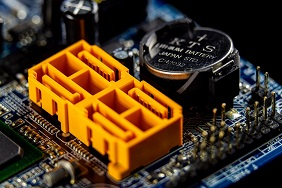
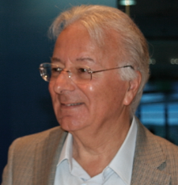
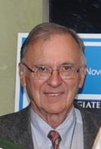
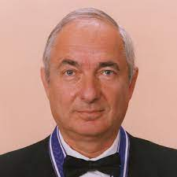
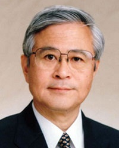

O QUE SÃO MICROPROCESSADORES
O microprocessador, geralmente chamado apenas de processador, é um circuito integrado que realiza as funções de cálculo e tomada de decisão de um computador. Todos os computadores e equipamentos eletrônicos baseiam-se nele para executar suas funções, podemos dizer que o processador é o cérebro do computador por realizar todas estas funções. Um microprocessador incorpora as funções de uma unidade central de computação (CPU) em um único circuito integrado, ou no máximo alguns circuitos integrados. É um dispositivo multifuncional programável que aceita dados digitais como entrada, processa de acordo com as instruções armazenadas em sua memória, e fornece resultados como saída. Microprocessadores operam com números e símbolos representados no sistema binário.
CONCEITO, HISTORIA E CARACTRISTICAS SOBRE O MICROPROCESSADORES
CONCEITO: O microprocessador, geralmente chamado apenas de processador, é um circuito integrado que realiza as funções de cálculo e tomada de decisão de um computador.
HISTORIA: s microprocessadores surgiram como produto da evolução tecnológica de dois ramos específicos: computação e semicondutores. Ambos tiveram seu início em meados do século 20, no contexto da Segunda Guerra Mundial , com a invenção do transistor , com o qual as válvulas foram substituídas.
para saber mais sobre a historia acesse esse video
CARACTRISTICAS: Encapsulado. Um revestimento de cerâmica que cobre o silício e o protege dos elementos (como o oxigênio do ar ).
Cache . Um tipo de memória ultrarrápida disponível para o processador, de forma que ele utilize RAM apenas quando necessário, já que osdados em uso são armazenadosnos diversos níveis do cache para recuperação imediata. Coprocessador matemático. Chamada de unidade de ponto flutuante, é a parte do processador que lida com as operações lógicas e formais.
Registros. Uma pequena memória de trabalho no processador, projetada para controlar sua própria operação e condições. Portas. Os conduítes que permitem ao processador comunicar informações com o restante dos componentes do sistema.
abaixo você vai ver onde foi fundando a empresa, e como ele está hoje em dia
AGORA CONHEÇA OS CRIADORES
federico faggin
marcian hoff
santley mazor
masatoshi shima